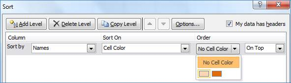

With this feature, MS Excel moves the cell text and color to the specified location (bottom or top) of the sorting range.

Sorting by Cell Color
This is explained in the following code snippets:
|
C#
//Creates the data sorter IDataSort sorter = book.CreateDataSorter(); //Range to sort sorter.SortRange = range;
//Creates the sort field with the column index, sort based on and order by attribute ISortField sortField = sorter.SortFields.Add(2, SortOn.CellColor, OrderBy.OnTop); //Specifies the color to sort the data sortField.Color = Color.Red; //Sort based on the sort field attribute sorter.Sort();
|
|
VB
''Creates the Data sorter Dim sorter As IDataSort = book.CreateDataSorter() ''Specifies the sort range. sorter.SortRange = range
Dim field As ISortField '' Adds the sort field with column index, sort based on and order by attribute field = sorter.SortFields.Add(2, SortOn.CellColor,OrderBy.OnTop) ''Sorts the data based on this color field.Color = Color.Red '' Sorts the data with the sort field attribute sorter.Sort()
|